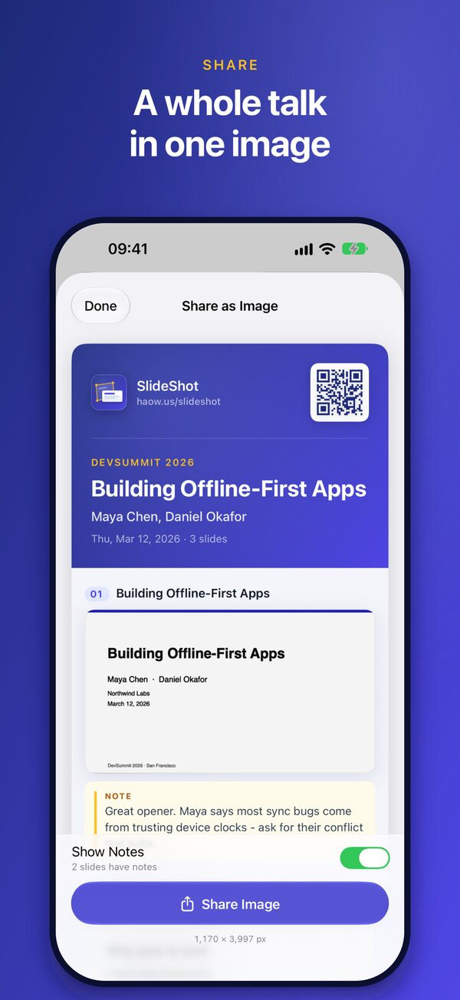

이런 경험 있으신가요?
-

각도 문제
옆자리에 앉았나요? 슬라이드 사진이 비뚤게 찍힙니다.
SlideShot이 슬라이드를 찾아 원래 모양대로 반듯하게 보정합니다. 마치 원본 자료를 받은 것처럼요.
-

사진 보관함 문제
사진이 500장 쌓이면, 어떤 슬라이드가 어느 발표였는지 알 수 없습니다.
SlideShot이 모든 슬라이드를 읽고 발표, 발표자, 컨퍼런스별로 정리합니다.
-
기억 문제
일주일 뒤, 그 발표는 무슨 내용이었죠?
SlideShot은 슬라이드의 텍스트와 메모를 함께 보관하고, 모두 검색할 수 있게 합니다.
-

공유 문제
발표를 공유하려고 사진 40장을 보낼 필요는 없습니다.
SlideShot은 발표 전체를 이미지 한 장이나 PDF 하나로 공유합니다.
SlideShot으로 할 수 있는 일
-
촬영
모든 슬라이드를 자동으로 촬영
iPhone을 프로젝터 화면이나 모니터에 향하기만 하세요. SlideShot이 슬라이드를 찾아 화면이 안정되면 촬영하고, 이미 있는 슬라이드는 건너뜁니다.
-
보정
어느 자리에서든 반듯하고 평평하게
원근 보정으로 옆자리에서도 각 슬라이드의 원래 모양을 복원하며, 망원 렌즈가 있는 iPhone에서는 자동 줌이 망원 렌즈를 사용합니다.
-
자동 라벨링
발표와 컨퍼런스별로 정리
SlideShot이 모든 슬라이드를 읽고 발표마다 제목, 발표자, 컨퍼런스, 날짜를 라벨링한 다음, 발표를 컨퍼런스별로 묶습니다. 직접 입력할 필요가 없습니다.
-
메모와 검색
나중에도 어떤 슬라이드든 바로 찾기
어떤 슬라이드에든 짧은 메모를 추가하고, 제목, 발표자, 슬라이드 텍스트, 메모 전체에서 검색하세요.
-
공유
발표 전체를 이미지 한 장으로
발표를 휴대폰 너비의 이미지 한 장으로 공유하거나(메모 포함 여부 선택), PDF로 내보내세요.
-
개인정보 보호
iPhone에만 저장
계정도, 서버도, 추적도 없습니다. SlideShot은 어떤 데이터도 수집하지 않으며, 슬라이드와 메모는 기기에만 저장됩니다.
iOS 26 이상이 필요합니다.